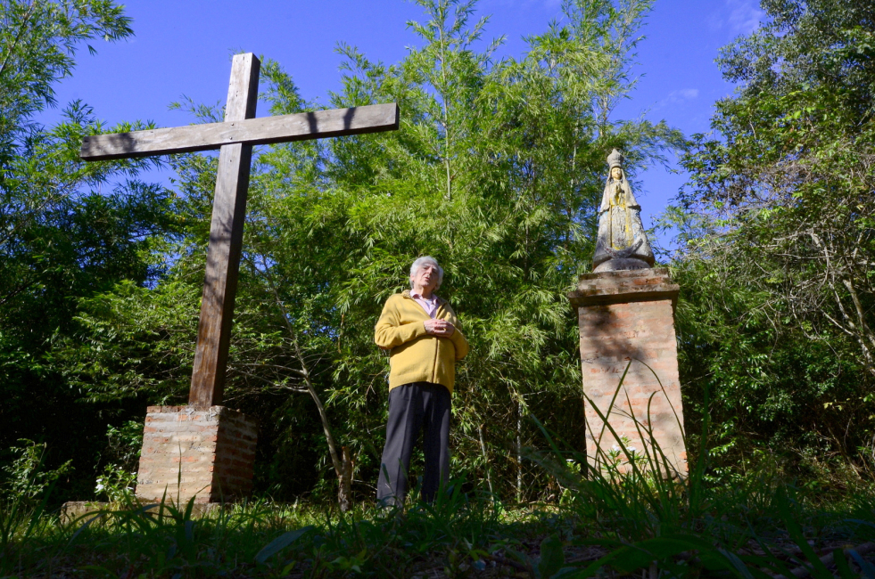
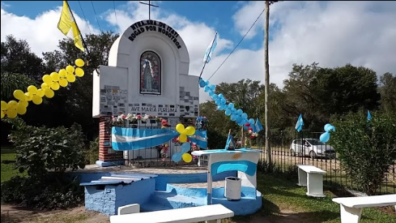
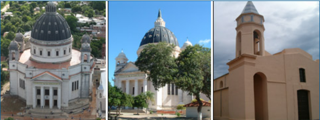
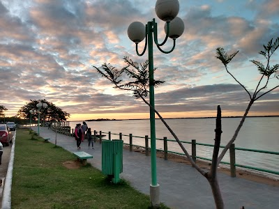
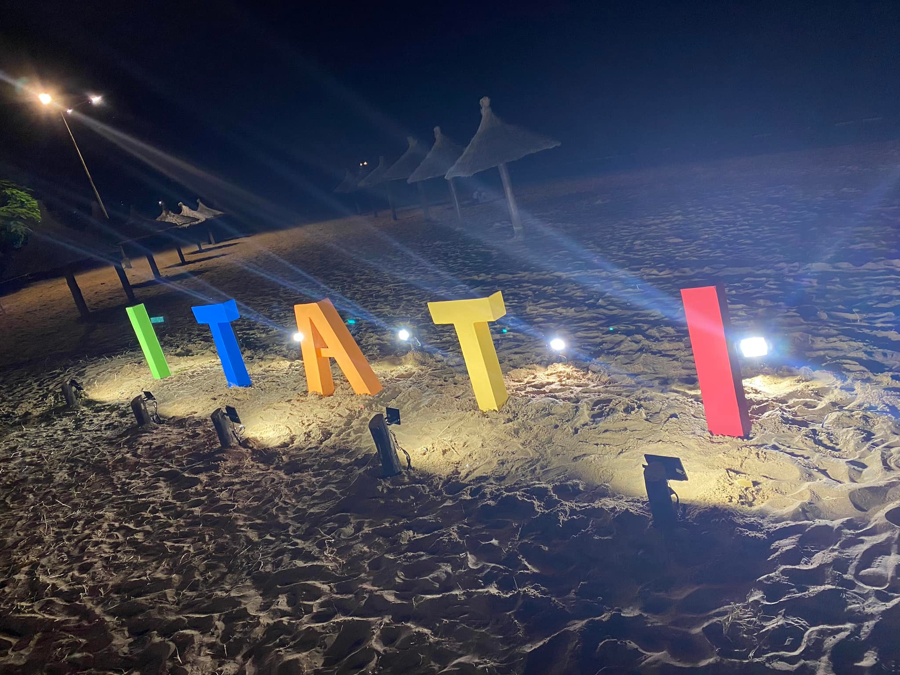
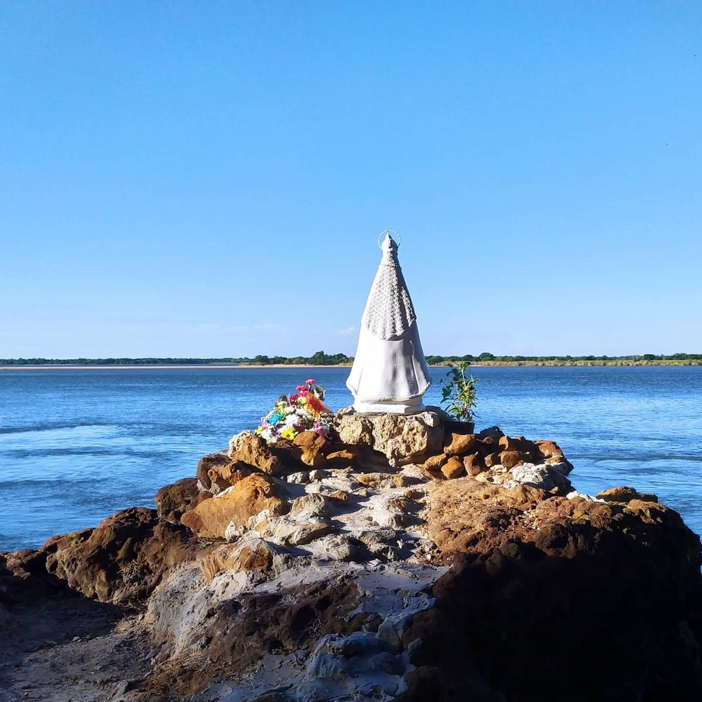
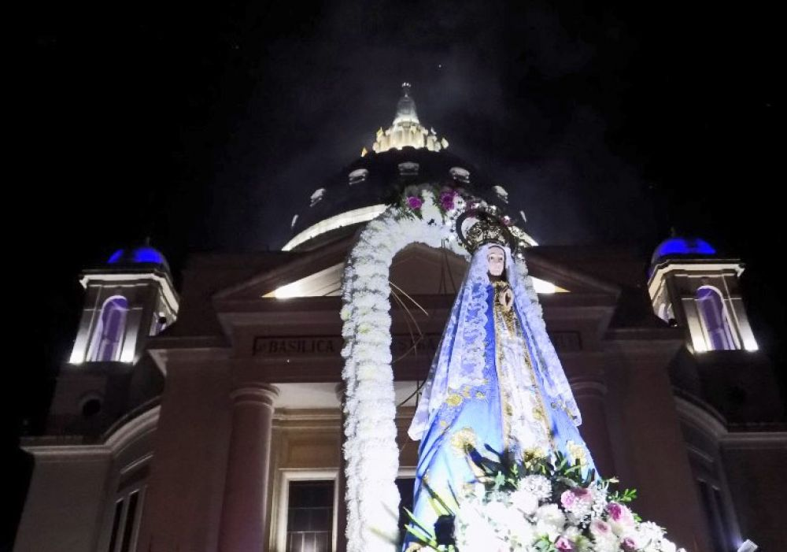
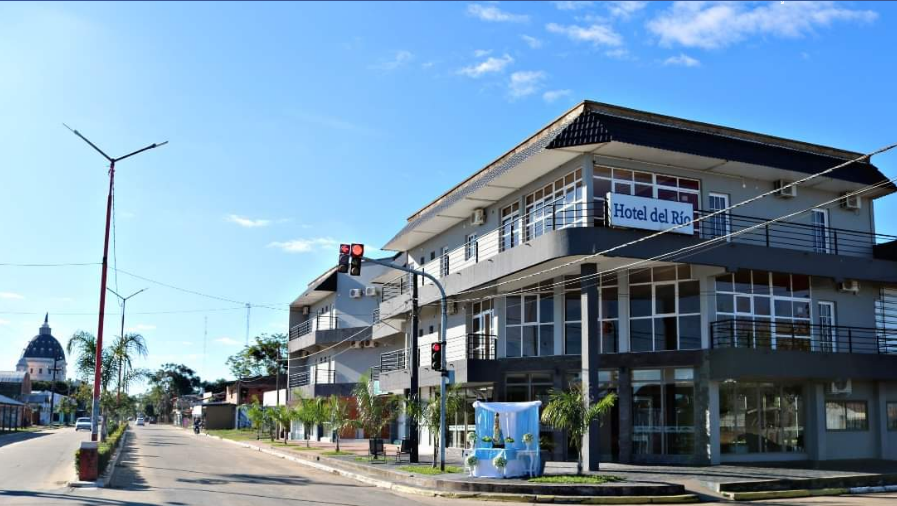
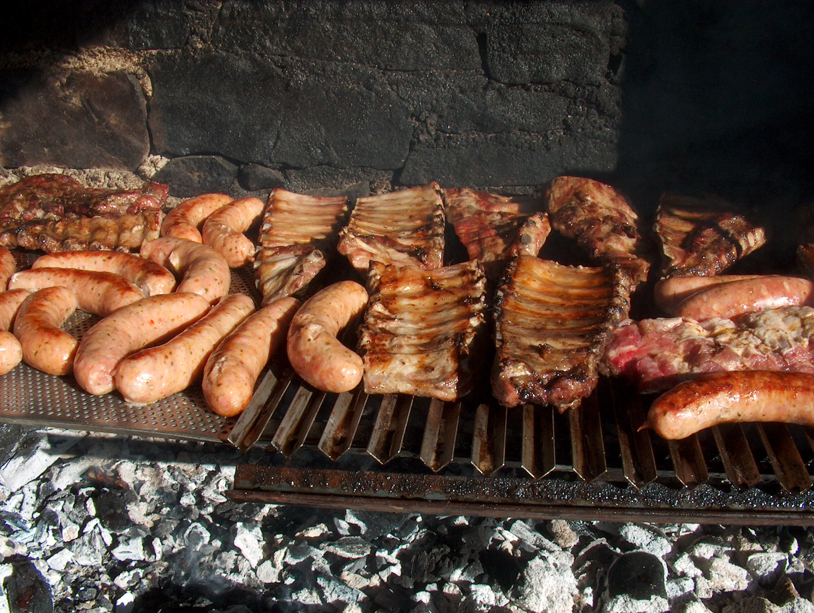
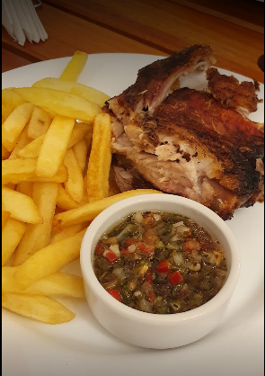

Es el lugar donde se originó la ciudad de Itatí, ubicado a unos kilómetros al oeste del centro urbano, río abajo.
Se dice que la Virgen de Itatí se apareció ante los indios, convenciéndolos de no atacar a la población. Hoy se encuentra allí una Gruta dedicada a la Virgen. Disfrutará de lugares cargados de leyendas y creencias religiosas, mientras descubre la fe creciente de los habitantes de Itatí.
Es el solar que contiene los edificios más antiguos o trascendentes de Itatí, la Basílica, al Museo Sacro, el Camarín del Obispo Niella, la Escuela Parroquial y la Escuela Normal.
La belleza del Paraná, la calidez de su gente, el olor a leña en el aire, las postales del litoral y la hermosa Basílica dedicada a Nuestra Señora de Itatí lo hace un lugar incomparable.
El Balneario de La Frontera se ubica a 300 metros de la basílica, entre las entre calles San Martín y Nepomuceno Alegre. Cuenta con sector delimitado por boyas, servicio de guardavidas de 10 a 19, sanitarios con duchas, áreas para la práctica de deportes, parador con venta de bebidas, galletitas y comidas rápidas.
La imagen de la Virgen de Itacuá se encuentra ubicada en una gruta, a orillas del río Paraná, dentro de un predio rodeado de árboles y una considerable vegetación que crean un ambiente de armonía para los visitantes.
Llegan a Itatí los peregrinos que parten de distintos lugares año tras año. Multitudinaria manifestación de fe, que desde 1589 congrega a cientos de miles de fieles de todo el país, especialmente del nordeste argentino, e incluso de países vecinos.
En Itatí, Corrientes, se comienza 9 días antes con la celebración de la novena, hasta culminar el día 9, con una misa. Al día siguiente se inicia la semana de preparación para celebrar la Coronación de la Santísima Señora.
A comienzos de 1979, por iniciativa de los miembros de la Pastoral Vocacional, surgió en la diócesis de Resistencia la idea de realizar una caminata juvenil a Itatí, pidiendo por las vocaciones sacerdotales y religiosas, en aquel año se concentraron más de 5.000 jóvenes. Desde el año 2000 se parte desde la explanada de la intersección entre la Ruta Nacional Nº 12 y la Avenida Centenario, Corrientes Capital.
Ubicado sobre la avenida 25 de mayo con muy buena atencion y atendido por sus propios dueños
Ubicado a muy pocas cuadras del la costanera, con muy buena atencion y muy buenas reseñas
Un buen lugar para comer unas parrilladas con amigos y disfrutar de la noche de la cuidad
Hermoso lugar para ir a cenar con la familia o amigos cuenta con unas de las mejores hamburgesas del lugar y variedad de comidas
